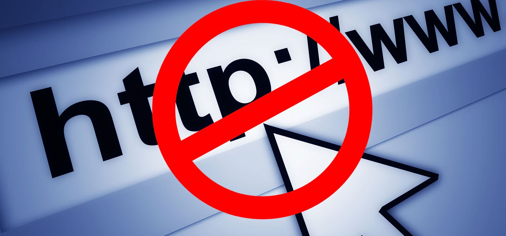

Tips & Trik Teknologi
Cara mudah mengakses situs yang terblokir

Cara mudah mengakses situs yang terblokir
Saya akan berbagi trik bagaimana kita bisa tetap mengakses situs yang diblokir dengan mudah dan simpel. Proxy Server merupakan cara termudah yang mungkin anda bisa gunakan salah satunya bisa melalui halaman web lain, berikut beberapa web proxy yang bisa anda gunakan
Cara menggunakannya sangat mudah ketik alamat www.webproxy. to setelah memasuki halaman web tersebut ada form “Enter Web Address” lalu masukan alamat web yang akan anda kunjungi di form tersebut lalu tinggal pilih GO maka anda bisa mengunjungi situs tersebut tanpa terblokir lagi.
Caranya sama seperti yang diatas anda tinggal mengunjungi alamat www.proxysite.com setelah masuk ke halaman web tersebut anda bisa memasukan alamat web yang akan anda kunjungi di form “Enter Url” dan ada berbagai macam pilihan server yang bisa digunakan pada sebelah kiri form tersebut, selanjutnya anda tinggal pilih GO dan anda akan dibawa pada situs yang anda inginkan tanpa terblokir lagi.